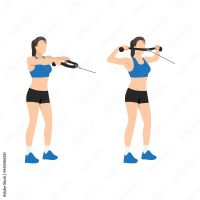
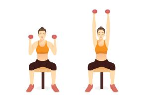

Gym Exercises
Shoulders-
Sculpting your shoulders doesn't require a lot of equipment or training just a set of dumbbells.
Dumbbells are versatile and easy to use, and they can strengthen more than just your muscles. They work your brain, too, as you try to balance and coordinate the movements. And because dumbbells engage more muscles to balance the weight, they help build greater overall stability in the area of focus.
Shoulder strength training can reduce your risk of injury by strengthening your core muscles, which makes you more stable and lessens imbalances.
Face Pull-

Dumbell shoulder press-

Face Pull-
Set a cable machine to chest height and add a rope attachment.
Grip the rope using a neutral grip, so that the palms are facing each other.
Take a step backwards and adopt a shoulder width or staggered stance.
Begin the reps by pulling the rope towards your face, pulling the rope apart as you do so. Keep your elbows pointed upwards and to the side as you pull.
Squeeze your rear delts and take a short pause before returning the rope to the starting position with control.
Face Pulls Form Tips & Mistakes To Avoid:
Don't point your elbows down and bring the rope to your chin. Instead, flare your elbows up and out and bring your hands to your forehead.
Don't start by squeezing your shoulder blades together. ...
Don't use momentum and 'swing' back and forward as you pull.
Dumbell shoulder press-
1.Stand with your feet shoulder-width apart and hold a dumbbell in each hand.
2.With your palms facing forward and your elbows under your wrists, position the dumbbells at your shoulders
3.Push the dumbbells up and fully extend your arms.
4.Lower the dumbbells back down to your shoulders and repeat the movement until the set is complete.
Leaning back: This can place unnecessary strain on your spine. Work to keep your back straight and upright throughout the movement. Flaring out your elbows: This can lead to shoulder discomfort or injury.
Keep your elbows pointed forward, aligned with your body.